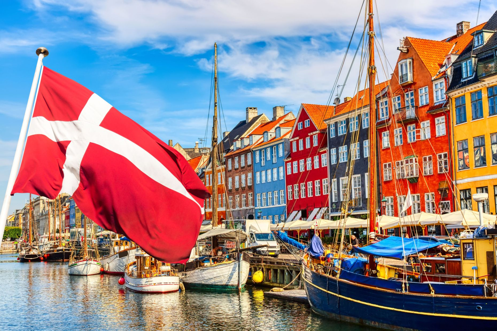
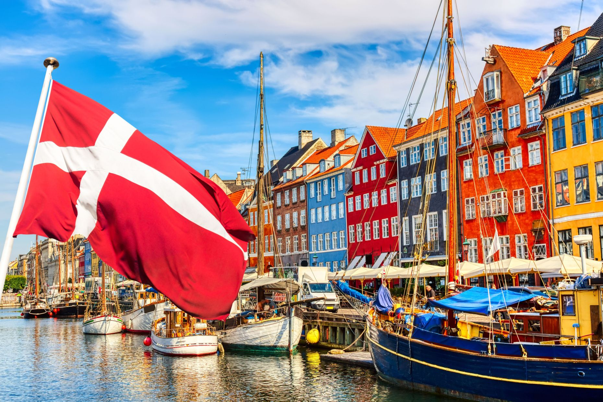
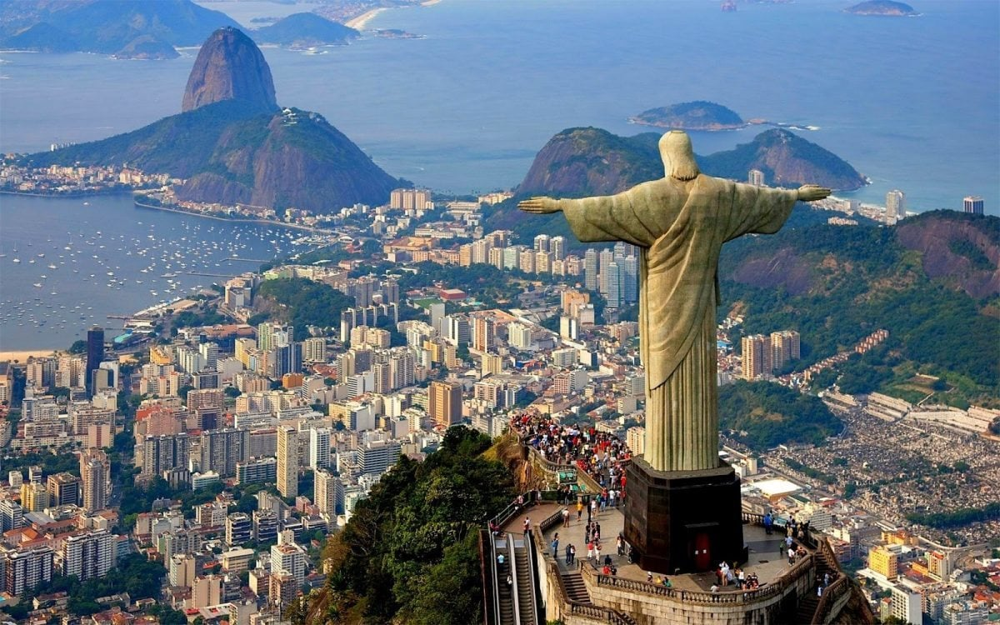

Venecia

Siendo la capital romántica de Italia, esta se conoce como la “Ciudad de los Canales”, gracias a su impresionante arquitectura.
Sin embargo, la estructura de esta ciudad peatonal, sede de algunos de los eventos más importantes de arquitectura y diseño como la Bienal de Arte, no es una casualidad.
Una de mis cosas favoritas de esta cuidad es su historia. Venecia fue construida para que los habitantes de ciudades vecinas escaparan de las invasiones babáricas durante el 421d.C.
Copenhague
 

La capital de la arquitectura y la sostenibilidad. Donde las bicicletas y los espacios verdes forman parte del skyline de la ciudad. La capital de Dinamarca es un destino en auge gracias a sus monumentos, su gastronomía, sus castillos y sus múltiples caras.
Aunque la gente no es tan cálida y acogedora como en latinoamérica, todos son muy educados y siempre tienen tiempo para una buena fiesta.
Rio de Janeiro
Desde niña cuando ví la película de BlueSky Studios, Río, ha sido mi sueño poder visitar esta ciudad.
Es uno de los principales centros económicos, de recursos culturales y financieros de Brasil. Esta ciudad es conocida como Ciudad Maravillosa (cidade maravilhosa en portugués) y aquí se combina elegantemente lo urbano con la naturaleza, la cultura, historia y la diversión.
Las cosas más características de Río de Janeiro son el Pan de Azúcar y el Corcovado, con la famosa estatua del Cristo Redentor con los brazos abiertos.